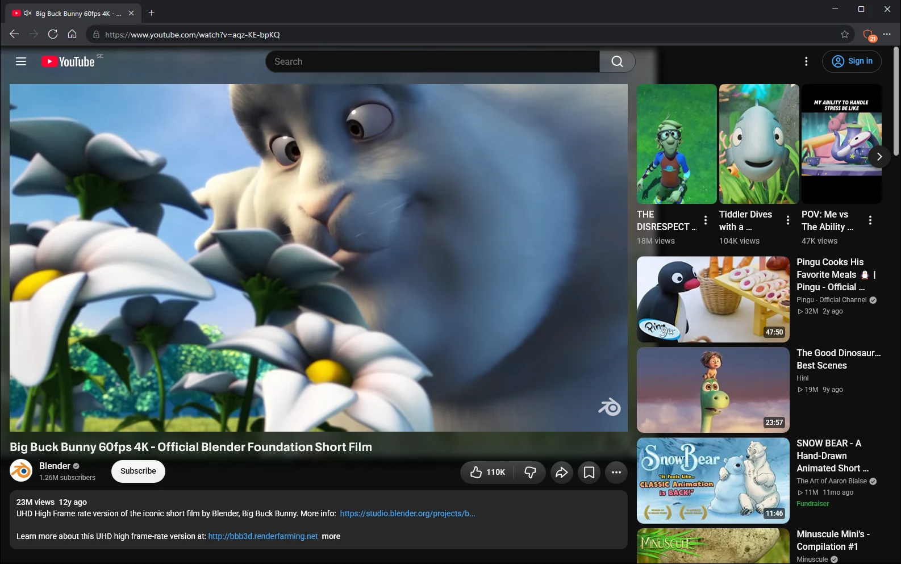
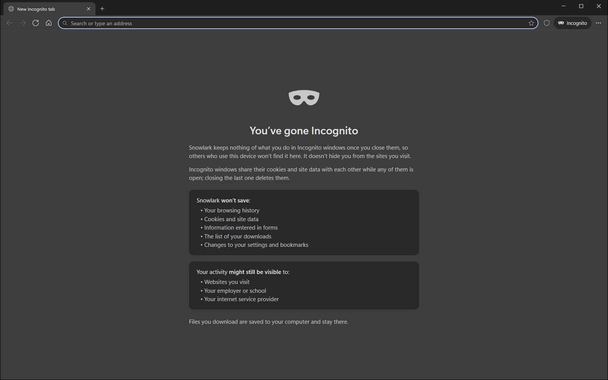
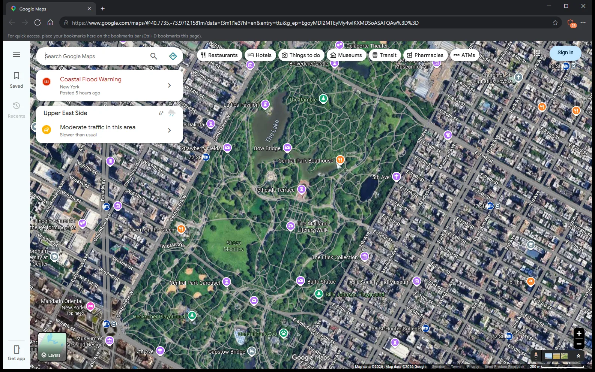
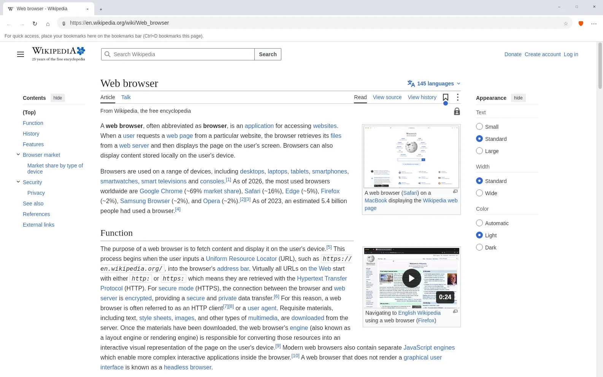
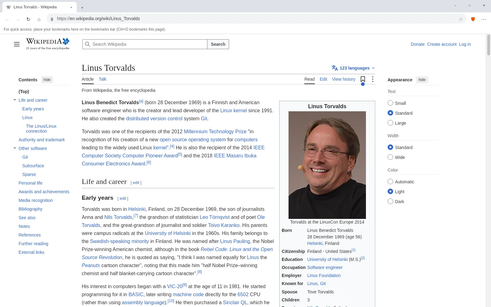

Screenshots











Features
Ad and tracker blocking, built in
The public filter lists uBlock Origin uses by default (EasyList, EasyPrivacy and more), kept up to date, with network, cosmetic and scriptlet filters. Add your own filters and lists in settings. No extension to install.
Incognito windows
Cookies, site data, history and downloads of an Incognito window stay in memory; nothing of theirs is written to your profile.
A password manager
Offers to save a password when you sign in and fills it next time. Passwords are stored encrypted, and showing one needs Windows Hello.
Signed, with updates you choose
Every preview is code-signed. Snowlark checks for updates only if you say yes, and verifies the download's checksum and signature before using it.
Nothing you did not ask for
No built-in AI features, no cryptocurrency or wallet, and no search engine deals: DuckDuckGo is preset, and Google, Bing, Brave Search and Startpage are one setting away.
Open source
The engine and the browser are open source under the Mozilla Public License 2.0, built from the web's specifications and tested against the Web Platform Tests.
Install
- Download the zip (49 MB, Windows 10 or 11, 64-bit).
- Unzip it anywhere and start
snowlark.exe. There is no installer. - If Windows SmartScreen shows “Windows protected your PC” the first time, choose More info, then Run anyway: a new build has to earn its reputation first.
Your bookmarks, history, settings and cookies are kept in %LOCALAPPDATA%\Snowlark. To remove Snowlark, delete the unzipped folder and that data folder. Older previews are on the releases page.
On Linux there is no preview to install yet: a .tar.gz comes once the window runs. Until then Snowlark builds from source with its headless modes; the README has the steps.
Roadmap
What is being built now, and what comes next. Popular websites that break come first; after them, the areas where the most Web Platform Tests still fail.
In progress and up next
- Service workers and the Cache API: sites that work offline, installable web apps and faster repeat visits.
- Fixes for what breaks popular websites, found by comparing about 700 pages at two widths: card layouts with
aspect-ratio, and content that stays hidden because an animation or a WebGL check never finishes. - Linux: Snowlark renders pages without a window on Linux (V8 for Linux, text with fontconfig and HarfBuzz, painting with Skia); see the screenshots above. The messaging between the browser and its tab processes works on Linux too. Now: a Wayland window, then separate processes for tabs, WebGL, and a .tar.gz preview once it runs.
Next
- The remaining Web Cryptography algorithms: ML-KEM, ML-DSA, KMAC and Argon2.
- More fixes for popular websites, ranked by how many sites each problem affects.
- WebRTC: video calls in the browser.
Later
- macOS, after Linux. The engine is kept free of platform code, so each platform needs its own painting, text, window, media and sandbox parts.
- Password manager, next stage: a Windows sign-in prompt where Windows Hello is not set up, and importing passwords exported from other browsers.
- WebGPU, after WebGL.
Progress
Snowlark is in active development on Windows and Linux. These numbers, from the Windows build, come from one development machine and move every day.
Speedometer 3.1 in the window (higher is better)
Web Platform Tests by area
Testharness subtests per area, from the full run of 25 November 2026 (reftests are counted in the total above).
| Area | Passing | Subtests | Share |
|---|---|---|---|
| URL | 11,006 | 11,006 | 100.0% |
| Encoding | 23,643 | 23,662 | 99.9% |
| WebAssembly | 191,254 | 191,679 | 99.8% |
| Selection API | 34,279 | 34,444 | 99.5% |
| WebGL | 4,249 | 4,270 | 99.5% |
| CSS Shapes | 7,689 | 7,760 | 99.1% |
| IndexedDB | 3,125 | 3,167 | 98.7% |
| DOM | 62,577 | 63,700 | 98.2% |
| Shadow DOM | 15,058 | 15,351 | 98.1% |
| JavaScript (test262) | 52,123 | 53,543 | 97.3% |
| SVG | 13,951 | 14,381 | 97.0% |
| Editing | 113,002 | 116,624 | 96.9% |
| Streams | 2,804 | 2,916 | 96.2% |
| CSS Fonts | 8,659 | 9,040 | 95.8% |
| CSS Backgrounds | 6,607 | 6,965 | 94.9% |
| CSS Anchor Positioning | 13,039 | 13,890 | 93.9% |
| CSS Typed OM | 12,306 | 13,156 | 93.5% |
| CSS Flexbox | 5,344 | 5,800 | 92.1% |
| CSS Selectors | 5,832 | 6,385 | 91.3% |
| HTML | 141,311 | 155,309 | 91.0% |
| Web Audio | 5,187 | 5,742 | 90.3% |
| CSS Sizing | 5,885 | 6,915 | 85.1% |
| Fetch | 7,838 | 9,256 | 84.7% |
| CSS Grid | 14,606 | 17,547 | 83.2% |
| Web Cryptography | 53,209 | 70,549 | 75.4% |
| CSS Masking | 4,918 | 6,892 | 71.4% |
| CSS Values | 6,371 | 10,584 | 60.2% |
Recent work
- Pages with stacked blur layers (
backdrop-filter) no longer use gigabytes of memory, and scroll smoothly. - The Cache API:
caches,CacheStorageandCache, the first part of service workers. - Google Maps draws its map with WebGL and zooms smoothly with the mouse wheel.
- Google Maps' satellite view works, and zooms as smoothly as the map view.
- WebGL extensions: 32 in WebGL 1 and 28 in WebGL 2.
- Fade-in animations that stayed invisible on pages with web fonts now play (a fix to a regression of 22 November).
- WebGL 2, on OpenGL ES 3.0 through ANGLE, on pages, in
OffscreenCanvasand in workers. - CSS Shapes: text wraps along circles, polygons, images and gradients set with
shape-outside. - CSS anchor positioning: tooltips, menus and popovers placed next to the element they belong to.
- CSS Typed OM:
computedStyleMap(),attributeStyleMapandCSS.px()and its family. - Rich text editing: joining blocks, deleting lines and white space behave as in other browsers, so editors keep their text and spacing.
- A newer version of Stylo, the style engine, with more CSS supported.
- WebAssembly modules compile without waiting for unrelated page work, and compile while they download.
- AVIF images with transparency, high bit depths and animation.
- The URL Pattern API, and the AES-OCB, ChaCha20-Poly1305 and SHA-3 algorithms in Web Cryptography.
Architecture
Snowlark keeps the page's document tree in native Rust and makes the step between JavaScript and that tree nearly free, as the major engines do. Rust gives C++-class speed without C++'s memory-safety bugs, which matters because security comes first. It also lets the engine build on proven open-source components.
How a page flows through the engine
| Part | What it does |
|---|---|
| JavaScript | V8, embedded directly. Every JavaScript-visible interface is generated from the specifications' Web IDL, never written by hand, and hot properties take V8's fast path straight into Rust. |
| DOM | One arena of nodes per event loop, with ids that carry a generation, so a stale reference can never reach a reused node. |
| Style | Stylo, Firefox's style system: the cascade, computed values, invalidation and parallel restyling. |
| Layout | Block, inline, table, positioned layout and text are our own; flex and grid use Taffy. Each layout produces an immutable fragment tree, so unchanged parts are reused. |
| Paint and compositing | Display lists drawn on a raster thread per tab, in tiles, composited on the GPU at the display's refresh rate: with Direct2D on Windows, with Skia on Linux. |
| Network | HTTP/1.1 and HTTP/2 over TLS, cookies, cache, HSTS, Content Security Policy and mixed-content blocking. |
| Process isolation | Each tab's page runs in a renderer process of its own; the browser and its pages talk in plain-data messages. |
| Storage and media | IndexedDB, Web Audio and video, each in its own component. |
Built with
V8 (through Deno's rusty_v8), html5ever, cssparser and selectors from Servo, Stylo and encoding_rs from Firefox, the url crate, Taffy, resvg, Windows' Direct2D, DirectWrite, DirectComposition and Media Foundation, and on Linux Skia, fontconfig, FreeType and HarfBuzz.
Principles
- User security first, then speed on real, script-heavy pages, then style and layout throughput.
- Specifications are the source of truth. Behaviour is implemented from the WHATWG and W3C texts and checked against the Web Platform Tests.
- Every speed claim is measured, before and after, on the same machine, against Chrome.
Use of AI
Snowlark is developed with AI coding assistants, mainly Anthropic's Claude. They write most of the code and do much of the debugging, testing and benchmarking, directed by the project's maintainer. Every change has to pass the same checks whoever wrote it: the unit tests, the Web Platform Tests, and the speed benchmarks. The browser itself has no built-in AI features.